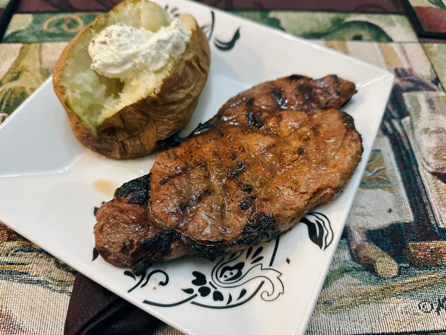

The beef steak recipe

INGREDIENTS:
- 1/2 lime, juiced
- 2 teaspoons carne asada seasoning
- 1 tablespoon olive oil
- 1 (8 ounce) boneless ribeye steak
STEPS:
Combine lime juice, carne asada seasoning, and oil in a resealable plastic bag. Add ribeye steak, reseal the bag, and marinate in the refrigerator for 30 to 45 minutes.
Drain marinade and allow steak to come to room temperature, about 30 minutes. Blot any excess moisture off the steak.
Preheat the grill to 500 degrees F (260 degrees C), and lightly oil the grate.
Place steak on the grill over direct heat. For rare: cook steaks until browned on the outside and red in the center, about 3 minutes per side. An instant-read thermometer inserted into the center should read 125 degrees F (52 degrees C).
Remove steak from grill; rest 5 minutes before serving.